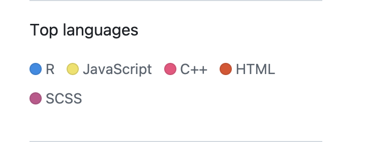
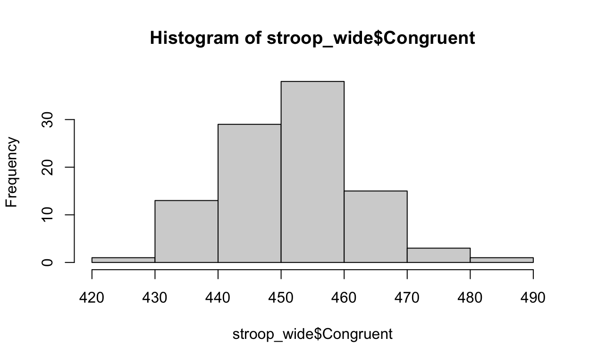
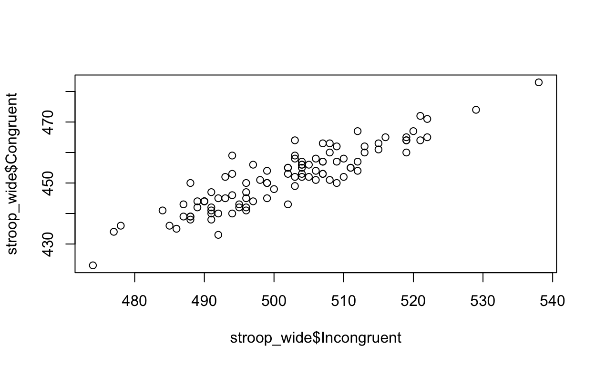
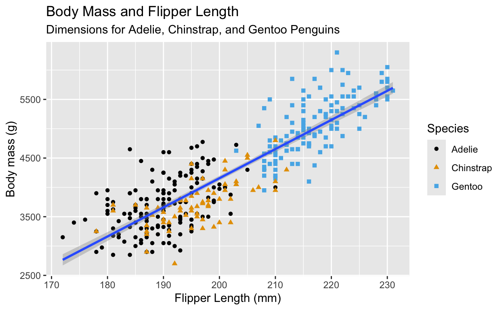

Week 7
In the last session we in crammed a lot of information. This week, we are going to take it steady with a greater emphasis on learning data science coding skills. The workshop will be more hands-on and there will be time allocated to practice what you have learned.
The broad structure is:
- Installing packages
- Scripting vs Programming
- The Tidyverse
- Visualising datasets
- Transforming/wrangling data into different structures
Packages
Packages are add-ons to the baseR language that extend the functionality of the environment. Last time we saw how to install packages using the GUI in RStudio. In the future you might not use RStudio, or it might not be available on the computer that you are using. You can also install packages from the console, or from the script editor using the following:
install.packages("package_name") # Note that the name of the package must by a string (use quote marks!)The first time that you run this you may be asked to choose a mirror from which to download - you can choose any, they are all the same!
Exercise 1
We are going to be using a group of packages called the ‘tidyverse’ this week. Your first task is to install this using the console below.
install.packages('tidyverse')This may take a long time to install…
We are also using a package called datasauRus, and a
package called ggseg.
Install these two packages too.
install.packages('datasauRus')
install.packages('ggseg')
# OR
install.packages(c('datasauRus', 'ggseg'))The Tidyverse
Scripting vs Programming
In Week 5 we focused on programming more generally. Things like loops, if statements, and functions are what you would use if you had to build software that served a specific purpose, or if a package was not available.
Scripting is sometimes referred to ‘very high level programming’ - i.e. there is even less interaction with the lower functions of the computer architecture than there was with R (which was minimal!).
You are typically required to write far fewer lines of code to perform complex tasks.
The Tidyverse is a layer that sits on top of baseR and provides a clear and easy to read grammar for automating data science tasks.
We will load the package now with the library()
function.
You will see that this single command loads nine packages. We will not be using all of these, but it’s still good to have them just in case.
The majority of the functions that we will encounter in the Tidyverse are written in baseR as can be seen in the Top Languages section of the Tidyverse github page:

You also can see this by typing a function name without any brackets into the console:
Remove the brackets below and run the code.
across()Exercise
Rather than me talking about each package in the Tidyverse, go to the following website and explore for yourself
Click here for link to Tidyverse website
Below is a none-too-serious quiz in which you can input a single word that summarises what each package does.
Hint: They all end in “ing”.
Data Visualisation
Our first stop on this whistle-stop tour of data science is visualisation. This is the process of providing visual representations of a dataset to make it easier to interpret. Data visualisation could be a module in it’s own right, be we have enough time to show you the basics.
Load “stroop_wide” from the data folder in this week’s materials. We are not using the csv file for now, so load using the following command:
This will load a dataframe called ‘stroop_wide’ to the environment.
Inspect dataset - how many participants are there?
What are the column names?
load("data/stroop_wide")
dim(stroop_wide) #Gives the number of rows and columns in the dataframe
names(stroop_wide) # Gives the column names
## OR
str(stroop_wide) # Gives the structure of the dataframe (a bit more information)Base R
We’re going to recreate the boxplot from the Week 7 video. This plot was done in Base R.
boxplot(stroop_wide$Congruent, stroop_wide$Incongruent)We can also do a histogram:

Try doing a histogram of the incongruent condition:
hist(stroop_wide$Incongruent)Finally, we can do a scatter plot:

Base R is good for quick plots but it’s quite difficult to make them look nice.
Next we’re going to use the ggplot2 package from the Tidyverse to make some more interesting graphs.
The Grammar of Graphics
The Grammar of Graphics provides a coherent system for creating graphs. It uses a layered approach that consists of the following:
- Loading the data
- Mapping values and variables onto graphical elements such as axes
- Projecting these values onto shapes (geoms)
- Adjusting labels and themes
That’s enough for us to get started, but check the reading list for more information.
Penguins
We’re going to run through a textbook example first, and then look at some psychological data.
We need to access the example dataset which is contained within a separate package. Run the following in the console:
Next, open a new R script, save it as ‘penguin_example’ and load the necessary packages with:
We’re going to answer a simple question: do penguins with longer flippers weigh more or less than penguins with shorter flippers?
We can complicate this question further by making it more precise:
- Is the relationship positive or negative
- Is the relationship linear or non-linear
- Does the relationship vary by species or location of the penguin?
Spoiler Alert
We’re going to make this graph:

Inspect the dataset
Before we can plot anything we need to know more about the dataset.
We can use a tidy function called glimpse() to get the main
details.
Note that each column is formatted in snake case and that there are no capital letters.
Which variables do we need to answer our question? Note these down in your script file using #comments.
Creating a ggplot
The first function to call is ggplot(). This has two
important arguments, data which is the dataframe that we
are plotting, and mapping() which determines which parts of
the dataframe should be plotted.
Try writing this function call.
ggplot(data=penguins, mapping=aes(x=flipper_len, y=body_mass))This creates a base ggplot object, but if we plot it, it’s empty! We
still need to add instructions on how to plot the data! We
quite literally add these instructions using the +
symbol.
We’re first going plot the data as a scatter plot using the
geom_point() function.
This will create a scatter plot.
Next we’re going to make it so we can distinguish between different species of penguin. We do this by adding an extra aesthetic, colour, to our mapping:
Next we’re going to add a line of best fit to our data, we do this
with geom_smooth().
Graphs have to be labelled correctly, so lets give that a try. We can
re-label using labs()
Finally(ish), it is not very easy to distinguish between the
different colours, especially for someone with colourblindness. We can
change the colour pallet by adding an extra line to our code. We’re
going to use scale_colour_colourblind to do this:
We still have a bit of tweaking to do before it will look like our
target graph. By default, ggplot objects inherit aesthetics from the
main call. So anything that is stated in the mapping argument of
ggplot() will be carried through to the subsequent
geoms.
We can override this behaviour by specifying aesthetics at the geom level:
Note that the line of best fit is not a straight line.
We can fix this by specifying that we want a linear (rather than a non-linear) representation of our data:
The target plot also has different shapes for each species - can you make that change?
Exercises
Have a look at some of the other variables in the penguins dataset create your own plots. You might look at:
- Whether bill length is related to body mass
- Whether any of the relationships vary by island
- Sex differences